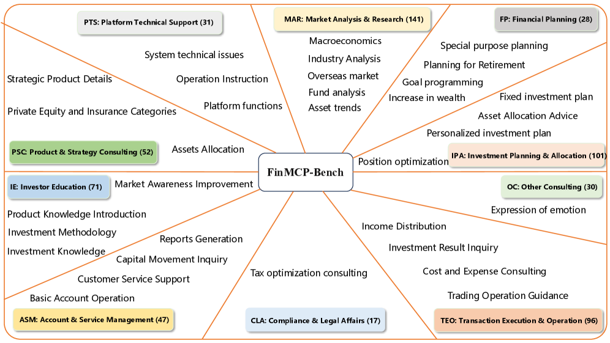
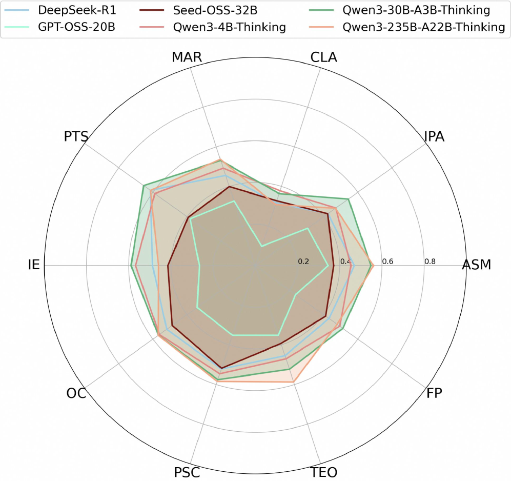
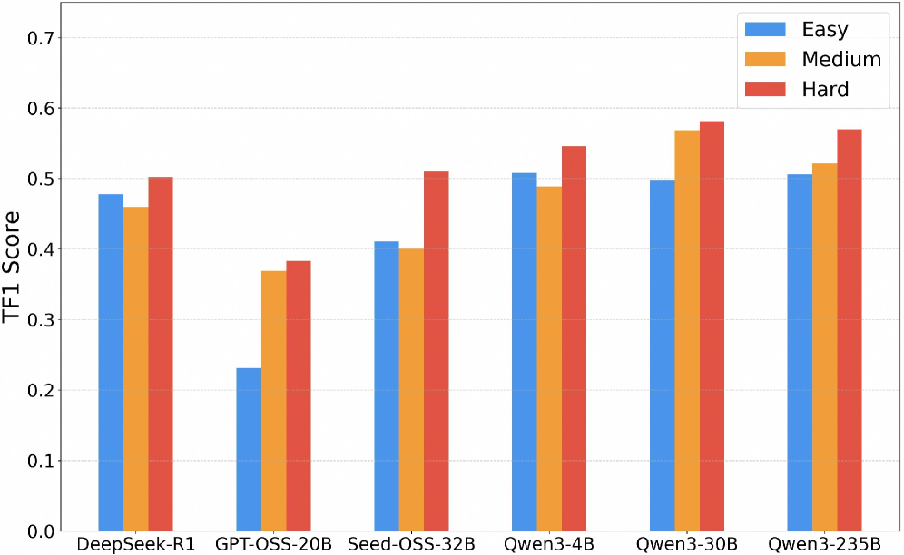

금융 도메인에서 LLM 에이전트가 진짜 일을 하려면 단순히 답을 잘 말하는 것만으로는 부족합니다. 사용자 의도를 해석하고, 적절한 도구를 호출하고, 여러 단계의 의존성을 가진 워크플로를 끝까지 수행하는 능력이 필요합니다. 그런 점에서 오늘 고른 논문 FinMCP-Bench는 아주 실전적인 질문을 던집니다.
“MCP를 붙인 금융 에이전트는 실제 업무형 질문에서 얼마나 잘 도구를 호출하고 추론할까?”
이 글에서는 논문 **FinMCP-Bench: Benchmarking LLM Agents for Real-World Financial Tool Use under the Model Context Protocol**를 바탕으로, 왜 이 벤치마크가 중요한지, 무엇을 측정하는지, 어떤 결과가 나왔는지, 그리고 우리가 실전 에이전트 설계에서 어떤 힌트를 얻을 수 있는지 정리해보겠습니다.
논문 한 줄 요약
FinMCP-Bench는 MCP(Model Context Protocol)를 사용하는 금융 LLM 에이전트의 실제 도구 호출 능력을 평가하기 위해 만든 벤치마크다.
단순 질의응답이 아니라,
- 단일 도구 호출
- 여러 도구를 한 턴에서 연쇄적으로 호출하는 작업
- 여러 턴에 걸쳐 도구와 대화를 섞어가며 문제를 해결하는 작업
까지 포함한다는 점이 핵심입니다.
왜 이 논문이 중요할까?
기존 벤치마크 상당수는 최종 답변의 정확도나 단발성 태스크에 집중합니다. 그런데 실제 금융 상담이나 투자 분석 업무는 훨씬 더 복잡합니다.
예를 들어 이런 식입니다.
- 사용자의 투자 목적을 파악하고
- 시장 데이터 도구를 호출하고
- 상품 정보 도구를 호출하고
- 포트폴리오 분석 도구를 연결하고
- 그 결과를 바탕으로 다시 설명하고
- 추가 질문이 오면 이전 맥락을 이어서 응답해야 합니다.
즉, **현실 세계의 에이전트는 “정답 생성기”라기보다 “도구 오케스트레이터”**에 가깝습니다. FinMCP-Bench는 바로 이 지점을 측정하려고 합니다.
특히 코난쌤처럼 MCP, 에이전트, 자동화 워크플로에 관심이 많은 분들에게는 거의 정면으로 꽂히는 논문입니다.
FinMCP-Bench는 무엇을 담고 있나?
논문에 따르면 이 벤치마크는 다음과 같이 구성됩니다.
- 총 613개 샘플
- 10개 주요 시나리오
- 33개 하위 시나리오
- 65개 실제 금융 MCP 도구
- 실제 사용자 로그 + 합성 데이터 혼합
샘플은 세 가지 유형으로 나뉩니다.
1. Single-tool
한 번의 대화 턴에서 도구 하나만 호출하면 해결되는 작업입니다.
- 145개 샘플
- 가장 단순한 유형
- 도구 선택의 정확성이 중요
2. Multi-tool
한 번의 턴 안에서 여러 도구를 순차적 또는 병렬로 호출해야 하는 작업입니다.
- 249개 샘플
- 평균 7.32개 도구 호출
- 평균 5.72단계
- 일부는 병렬 호출 포함
3. Multi-turn
여러 대화 턴에 걸쳐 도구를 호출하며 문제를 해결합니다.
- 219개 샘플
- 평균 5.95턴
- 평균 5개 도구 호출
- 가장 실전적이지만 가장 어렵습니다
Figure 1. 벤치마크가 다루는 금융 시나리오

FinMCP-Bench는 10개 주요 금융 시나리오와 33개 하위 시나리오를 포함합니다. 시장 분석과 투자 계획 같은 실제 금융 상담 흐름을 폭넓게 포괄한다는 점이 강점입니다.
이 그림은 FinMCP-Bench가 단순한 장난감 데이터셋이 아니라는 걸 보여줍니다. 논문은 특히 다음과 같은 실제 금융 상황을 포괄하려고 합니다.
- 시장 분석 및 리서치
- 투자 계획 및 자산 배분
- 포트폴리오 관리
- 위험 평가
- 금융 상품 추천
- 데이터 조회 및 리포팅
즉, “금융 QA”를 넘어 금융 업무형 도구 사용을 평가하려는 시도입니다.
데이터는 어떻게 만들었나?
이 논문의 인상적인 점 중 하나는 데이터 구성 방식입니다.
실제 로그 기반
연구진은 실제 금융 앱(Qieman APP)의 AI 어시스턴트 로그 1만 건을 수집하고, 여기서 품질이 높은 샘플을 선별했습니다.
조건은 대략 이렇습니다.
- 실제 금융 니즈를 반영하는가
- 문제 해결에 실제 도구 호출이 필요한가
- 결과가 충분히 만족스러운가
합성 데이터 보강
실제 로그만으로는 복잡한 멀티툴/멀티턴 패턴이 부족할 수 있으므로, 연구진은 추가로 합성 데이터를 만듭니다.
체인 기반 멀티툴 샘플 생성
- 도구 간 의존성 그래프를 만들고
- 도구 체인에 맞는 사용자 질의를 생성하고
- 해당 질의에 대한 전체 실행 트라젝토리를 생성합니다.
역할극 기반 멀티턴 샘플 생성
- planner가 사용자 페르소나와 목표를 정의하고
- 모델이 사용자와 상담사 역할을 동시에 수행하며
- 실제처럼 여러 턴에 걸친 대화를 생성합니다.
이 방식은 단순 복붙형 데이터셋보다 훨씬 더 워크플로 지향적입니다.
무엇으로 평가하나?
FinMCP-Bench는 단순히 최종 답변이 맞았는지만 보지 않습니다. 대신 도구 호출 능력 자체를 측정합니다.
1. Tool Recall (TR)
정답 도구 중 모델이 맞게 호출한 비율
2. Tool Precision (TP)
모델이 호출한 도구 중 실제로 맞는 도구의 비율
3. Tool F1 (TF1)
Recall과 Precision의 균형 점수
4. Exact Match Rate (EMR)
도구 호출의 구성 자체가 정답과 완전히 일치하는지 보는 가장 엄격한 지표
이 평가 방식이 중요한 이유는 분명합니다. 실전에서는 “결과가 얼추 맞는 것처럼 보이는 답변”보다 적절한 도구를 적절한 순서로 불러오는 능력이 훨씬 중요하기 때문입니다.
결과는 어땠나?
논문에서 보고한 대표 결과는 다음과 같습니다.
- Qwen3-235B-A22B-Thinking: 최고 성능
- Qwen3-30B-A3B-Thinking: 강력한 균형형
- Qwen3-4B-Thinking: 작은 모델인데도 꽤 잘함
- DeepSeek-R1 / Seed-OSS-36B: 중간권
- GPT-OSS-20B: 상대적으로 낮은 성능
흥미로운 포인트는 세 가지입니다.
1. 모델 크기 = 성능, 항상 성립하지 않는다
더 큰 모델이 항상 이기는 건 아니었습니다. 즉, 에이전트형 툴 사용에서는 단순 파라미터 규모보다 계획/호출 품질이 중요하다는 해석이 가능합니다.
2. Single-tool은 쉬워 보여도 과호출 문제가 있다
도구 하나만 쓰면 되는 문제에서 오히려 모델들이 불필요한 도구를 추가 호출하는 경향이 나타났습니다. 즉, 과잉 행동(over-calling) 문제가 존재합니다.
3. Multi-turn이 가장 어렵다
여러 턴에 걸쳐 맥락을 유지하고 도구를 이어 붙이는 문제에서 성능이 크게 떨어졌습니다. 이건 지금 대부분의 에이전트 프레임워크가 겪는 문제와도 정확히 연결됩니다.
Figure 4. 시나리오별 성능 비교

시나리오별 TF1 성능을 비교한 결과입니다. 상위 모델은 특정 영역만 잘하는 것이 아니라, 여러 금융 시나리오에서 비교적 고르게 성능을 유지합니다.
이 그림의 포인트는 단순 최고점이 아니라 균형감입니다. 강한 모델은 한두 시나리오만 잘하는 게 아니라, 여러 금융 시나리오에서 고르게 버틴다는 점이 인상적입니다.
실전 서비스에선 이 균형이 정말 중요합니다. 특정 태스크에서만 반짝하는 모델은 운영에 투입했을 때 불안정할 수 있기 때문입니다.
Figure 5. 난이도별 성능 변화

흥미롭게도 상위 모델은 쉬운 문제보다 오히려 더 복잡한 문제에서 TF1이 상승하는 경향을 보입니다. 더 많은 제약과 더 풍부한 도구 연결 기회가 오히려 올바른 호출을 유도했을 가능성이 있습니다.
이 결과는 꽤 재미있습니다.
보통은 어려운 문제일수록 성능이 떨어질 거라고 생각하지만, 상위 모델들은 오히려 Hard 구간에서 더 나은 TF1을 보이기도 합니다. 논문은 그 이유를 이렇게 해석합니다.
- 쉬운 문제는 도구를 적게 불러야 해서 과호출이 감점 요소가 됨
- 어려운 문제는 더 많은 제약과 더 복잡한 계획이 필요해, 잘하는 모델이 오히려 강점을 발휘함
이건 실전 에이전트 설계에서도 시사점이 큽니다. 문제를 너무 단순화하면 오히려 에이전트의 과잉 행동을 유발할 수 있다는 점이죠.
이 논문이 주는 실전 인사이트
제가 보기엔 이 논문의 핵심 가치는 세 가지입니다.
1. MCP 시대엔 “모델 성능”보다 “도구 사용 성능”이 중요하다
앞으로 에이전트는 모델 하나로 끝나지 않습니다. MCP처럼 표준화된 인터페이스를 통해 여러 도구를 연결하게 되고, 그때 중요한 건 “답변 품질”만이 아니라 호출 선택, 순서, 의존성 처리, 멀티턴 지속성입니다.
2. 벤치마크도 이제 워크플로 중심으로 가야 한다
정답 텍스트 하나 맞히는 벤치마크만으로는 실전성을 보기 어렵습니다. FinMCP-Bench는 벤치마크가 실행 흐름 전체를 평가해야 한다는 방향을 보여줍니다.
3. 멀티턴 안정성은 아직 큰 숙제다
도구를 잘 부르는 것보다 더 어려운 건 상황을 이어서 일관되게 수행하는 것입니다. 이건 지금 에이전트 제품들이 왜 중간에 삽질하고, 왜 컨텍스트가 길어질수록 이상해지는지 설명해줍니다.
한계도 분명하다
좋은 논문이지만 한계도 있습니다.
- 특정 금융 플랫폼 로그 기반이라 범용성에 한계가 있을 수 있음
- 중국어/중국 금융 생태계 중심이라 다른 시장에 바로 일반화하긴 어려움
- 최종 답변 품질보다 도구 호출 성능에 초점이 맞춰져 있음
- 613개 샘플은 충분히 의미 있지만, 장기적으로는 더 큰 규모가 필요할 수도 있음
그럼에도 불구하고 이 논문은 실전형 에이전트 평가의 방향을 아주 선명하게 보여줍니다.
마무리
FinMCP-Bench는 단순히 금융 벤치마크 하나가 아닙니다. 저는 이 논문을 **“MCP 시대의 에이전트 평가가 어디로 가야 하는지 보여주는 시금석”**처럼 봤습니다.
특히 코딩 에이전트, 리서치 에이전트, 업무 자동화 에이전트를 다루는 분들이라면 금융 도메인이 아니더라도 꼭 볼 가치가 있습니다. 결국 핵심 질문은 같기 때문입니다.
에이전트는 도구를 붙였을 때 정말 일을 잘하는가?
이 질문에 대해, FinMCP-Bench는 꽤 실전적인 방식으로 답을 시도한 논문입니다.
참고 링크
- 논문 페이지: arXiv 2603.24943
- PDF: https://arxiv.org/pdf/2603.24943
- HTML: https://arxiv.org/html/2603.24943v1
- MCP 소개: Anthropic MCP Docs